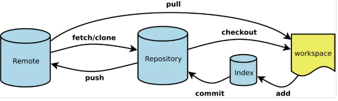
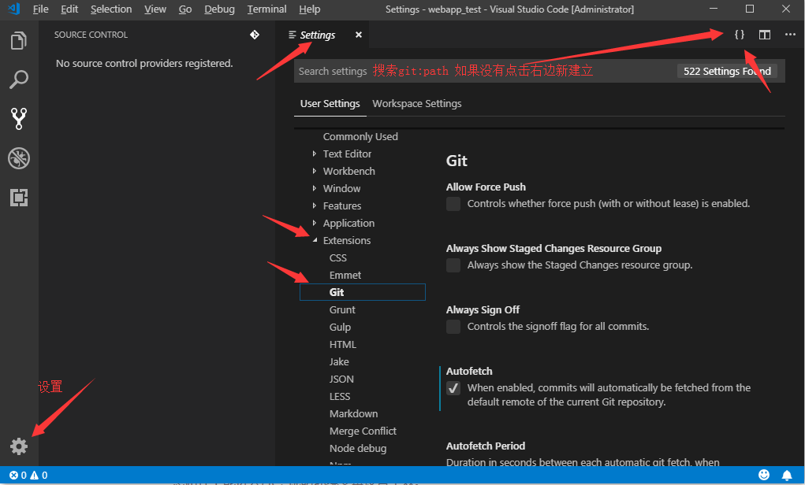
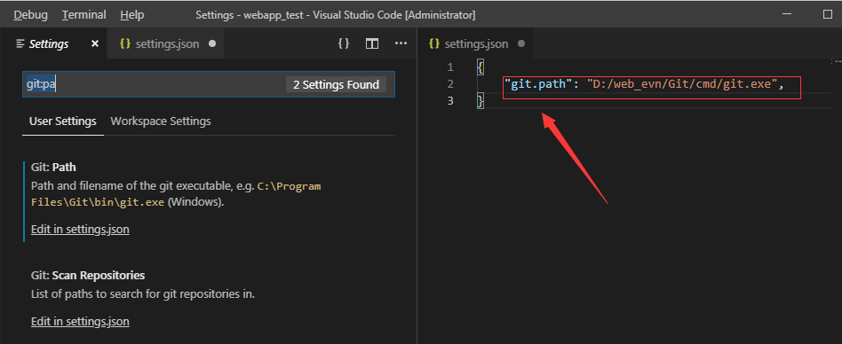
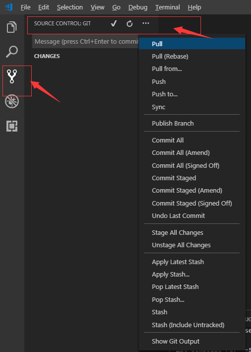
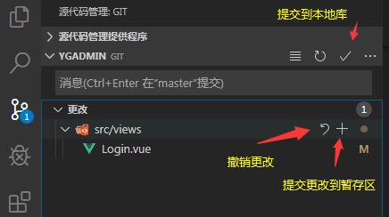
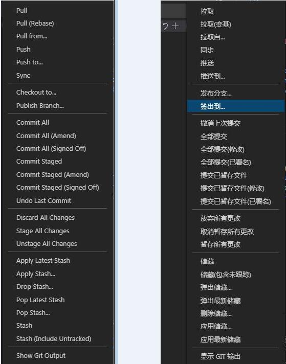
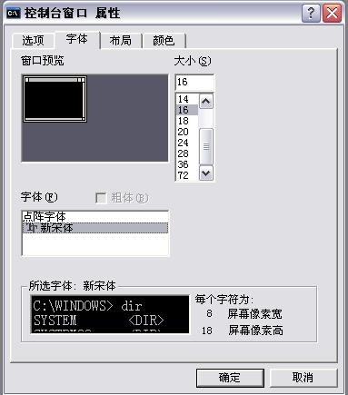
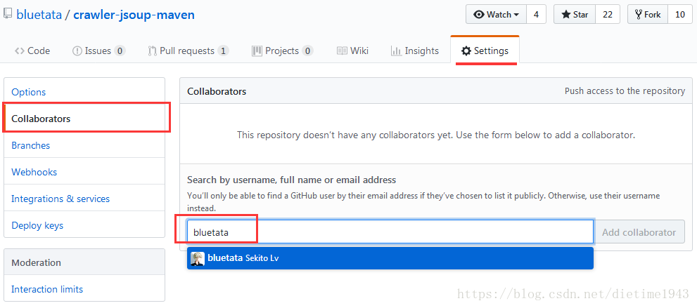
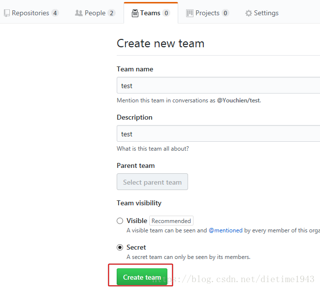

2. git使用教程
Git使用教程¶
1. 什么是版本控制系统¶
如果你用Microsoft Word写过长篇大论，那你一定有这样的经历： 想删除一个段落，又怕将来想恢复找不回来怎么办？有办法，先把当前文件“另存为……”一个新 的Word文件，再接着改，改到一定程度，再“另存为……”一个新文件，这样一直改下去，最后你的Word文档变成了这样:

过了一周，你想找回被删除的文字,想保留最新的一个，然后把其他的删掉，又怕哪天会用上，还不敢删 如果有一个软件，不但能**自动帮我记录每次文件的改动**，还可以让同事**协作编辑**，这样就不用自己管理一堆类似的文件了，也不需要把文件传来传去。如果想查看某次改动，只需要在软件里瞄一眼就可以，岂不是很方便？
这个软件用起来就应该像这个样子，能记录每次文件的改动：
| 版本 | 文件名 | 用户 | 说明 | 日期 |
|---|---|---|---|---|
| 1 | service.doc | 张三 | 删除了软件服务条款5 | 7/12 10:38 |
| 2 | service.doc | 张三 | 增加了License人数限制 | 7/12 18:09 |
| 3 | service.doc | 李四 | 财务部门调整了合同金额 | 7/13 9:51 |
| 4 | service.doc | 张三 | 延长了免费升级周期 | 7/14 15:17 |
这样，你就结束了手动管理多个“版本”的史前时代，进入到版本控制的20世纪。
2. Git是什么?¶
Git(读音为/gɪt/。)是一个开源的分布式版本控制系统，可以有效、高速地处理从很小到非常大的项目版本管理。 [1] Git 是 Linus Torvalds 为了帮助管理 Linux 内核开发而开发的一个开放源码的版本控制软件。
工作原理流程

3. svn集中式vs分布式Git¶
-
集中式 先说集中式版本控制系统，版本库是集中存放在中央服务器的，而干活的时候，用的都是自己的电脑，所以要先从中央服务器取得最新的版本，然后开始干活，干完活了，再把自己的活推送给中央服务器。中央服务器就好比是一个图书馆，你要改一本书，必须先从图书馆借出来，然后回到家自己改，改完了，再放回图书馆。集中式版本控制系统最大的毛病就是必须联网才能工作

-
分布式Git是分布式版本控制系统，那么它就没有中央服务器的，每个人的电脑就是一个完整的版本库，这样，工作的时候就不需要联网了，因为版本都是在自己的电脑上。既然每个人的电脑都有一个完整的版本库，那多个人如何协作呢？ 分布式版本控制系统通常也有一台充当“中央服务器”的电脑，但这个服务器的作用仅仅是用来方便“交换”大家的修改，没有它大家也一样干活，只是交换修改不方便而已。
4. Git安装配置¶
在Windows上安装Git 在Windows上使用Git，可以从Git官网直接下载安装程序，（网速慢的同学请移步国内镜像），然后按默认选项安装即可。
安装完成后，在开始菜单里找到“Git”->“Git Bash”，蹦出一个类似命令行窗口的东西，就说明Git安装成功！ 安装完成后，还需要最后一步设置，在命令行输入：
$ git config --global user.name "Your Name"
$ git config --global user.email "email@example.com"
注意git config命令的--global参数，用了这个参数，表示你这台机器上所有的Git仓库都会使用这个配置，当然也可以对某个仓库指定不同的用户名和Email地址。
5. 本地库使用¶
5.1 理解工作区与暂存区的区别？¶
-
工作区：就是你在电脑上看到的目录，比如目录下testgit里的文件(.git隐藏目录版本库除外)。或者以后需要再新建的目录文件等等都属于工作区范畴。
-
版本库(Repository)：工作区有一个隐藏目录.git,这个不属于工作区，这是版本库。其中版本库里面存了很多东西，其中最重要的就是stage(暂存区)，还有Git为我们自动创建了第一个分支master,以及指向master的一个指针HEAD。

5.2 本地库操作¶
- 初始化本地库 git init // 进入工作区目录，创建本地库
- 添加内容到暂存区 git add 文件名 // 文件件换成" ." 表示添加当前工作区所有内容到暂存区
- 提交内容到本地库 git commit -m "注释"
- 查看工作区状态信息
git stauts
$ git status On branch master Changes not staged for commit: (use "git add <file>..." to update what will be committed) (use "git checkout -- <file>..." to discard changes in working directory) modified: helloworld.js - 查看更改变化
$ git diff helloworld.js diff --git a/helloworld.js b/helloworld.js index b906f66..e5abf89 100644 --- a/helloworld.js +++ b/helloworld.js @@ -1,4 +1,4 @@ -var age = 22; -if(age == 22){ - console.log("age == 22"); +var num = 22; +if(num == 22){ + console.log("num == 22"); } \ No newline at end of file - 查看本地库操作日志
$ git log commit eb91b68040c6a7b6e347fd4c9ca839238c7307f0 (HEAD -> master) Author: zhousir <2919150@qq.com> Date: Fri Feb 15 09:39:48 2019 +0800 增加if判断语句 commit 46635c71ebfe7315b105cd46ef020529c01528ff Author: zhousir <2919150@qq.com> Date: Fri Feb 15 09:33:45 2019 +0800 初始变量age $ git log –pretty=oneline //只显示版本号和提交注释 - 回退到上一个版本
$ git reset --hard HEAD^ //HEAD最新版本，后面跟上"^"表示最新版本的上一个版本，“^^”表示上上一个版本; HEAD is now at eb91b68 增加if判断语句 $ git reset --hard 46635c71ebfe7315b105cd46ef020529c01528ff //回退到指定版本号 HEAD is now at 46635c7 初始变量age - 恢复工作区删除内容
//helloworld.js 需要恢复的文件; 如果不知道恢复文件名，可通过 git status 查看 $ git checkout -- helloworld.js - 删除本地库内容
//删除工作区所有文件 git add . git commit -m "删除文件" //提交删除修改操作
5.3 本地库忽律不管理的内容¶
新建.gitignore文件，内容为忽律的文件或目录 例示:
.gitignore
/node_modules/
6. 远程库使用¶
完全可以自己搭建一台运行Git的服务器，不过现阶段，为了学Git先搭个服务器绝对是小题大作。好在这个世界上有个叫GitHub的神奇的网站，从名字就可以看出，这个网站就是提供Git仓库托管服务的，所以，只要注册一个GitHub账号，就可以免费获得Git远程仓库。
在了解之前，先注册github账号，由于你的本地Git仓库和github仓库之间的传输是通过SSH加密的，所以需要一点设置： - 第一步：创建SSH Key。在用户主目录下，看看有没有.ssh目录，如果有，再看看这个目录下有没有id_rsa和id_rsa.pub这两个文件，如果有的话，直接跳过此如下命令，如果没有的话，打开命令行，输入如下命令：
ssh-keygen -t rsa –C “youremail@example.com”, 由于我本地此前运行过一次，所以本地有，
id_rsa是私钥，不能泄露出去，id_rsa.pub是公钥，可以放心地告诉任何人。
- 第二步：登录github,打开” settings”中的SSH Keys页面，然后点击“Add SSH Key”,填上任意title，在Key文本框里黏贴id_rsa.pub文件的内容。
点击 Add Key，你就应该可以看到已经添加的key。
6.1 如何添加远程库？¶
现在的情景是：我们已经在本地创建了一个Git仓库后，又想在github创建一个Git仓库，并且希望这两个仓库进行远程同步，这样github的仓库可以作为备份，又可以其他人通过该仓库来协作。
-
首先，登录github上，然后在右上角找到“create a new repo”创建一个新的仓库。
-
接着 要据GitHub的提示，在本地的testgit仓库下运行命令：
$ git remote add origin https://github.com/tugenhua0707/testgit.git //你的github仓库地址
$ git push -u origin master
把本地库的内容推送到远程，使用 git push命令，实际上是把当前分支master推送到远程。
由于远程库是空的，我们第一次推送master分支时，加上了 –u参数，Git不但会把本地的master分支内容推送的远程新的master分支，还会把本地的master分支和远程的master分支关联起来，在以后的推送或者拉取时就可以简化命令。推送成功后，可以立刻在github页面中看到远程库的内容已经和本地一模一样了
- 克隆远程库内容到本地
$ git clone https://github.com/yihu0817/webapp.git
```
- 推送本地库修改内容到远程库
```
$ git push origin master
```
- 拉取远程库内容到本地
```
$ git pull
Updating 6269da3..c80261a
Fast-forward
bin/www | 1 +
1 file changed, 1 insertion(+)
```
#### 6.2 git pull和git fetch的区别
1. git pull = git fetch + git merge
git pull会将本地库更新至远程库的最新状态 由于本地库进行了更新，HEAD也会相应的指向最新的commit id
2. git fetch的时候只是将remote的origin进行update 但是并没有在local的branch进行merge

###7. 分支管理
####7.1 创建与合并分支
>在 版本回填退里，你已经知道，每次提交，Git都把它们串成一条时间线，这条时间线就是一个分支。截止到目前，只有一条时间线，在Git里，这个分支叫主分支，即master分支。HEAD严格来说不是指向提交，而是指向master，master才是指向提交的，所以，HEAD指向的就是当前分支。
总结创建与合并分支命令如下：
```js
查看分支：git branch
创建分支：git branch name
切换分支：git checkout name
创建+切换分支：git checkout –b name
合并某分支到当前分支：git merge name
删除分支：git branch –d name
7.2 如何解决冲突？¶
在主干master上修改了文件，在分支dev上也修改了同一个文件，将分支合并到主干时会出现冲突。 Git用<<<<<<<，=======，>>>>>>>标记出不同分支的内容，其中<<<HEAD是指主分支修
<html>
<head>
<title>git学习</title>
<meta charset="utf-8">
</head>
<body>
<<<<<<< HEAD
<h1>git冲突处理</h1>
=======
<h2>冲突处理分支</h2>
>>>>>>> dev
</body>
</html>
分支策略：首先master主分支应该是非常稳定的，也就是用来发布新版本，一般情况下不允许在上面干活，干活一般情况下在新建的dev分支上干活，干完后，比如上要发布，或者说dev分支代码稳定后可以合并到主分支master上来。
7.3 多人协作¶
当你从远程库克隆时候，实际上Git自动把本地的master分支和远程的master分支对应起来了，并且远程库的默认名称是origin。
要查看远程库的信息 使用 git remote 要查看远程库的详细信息 使用 git remote –v
一：推送分支：
推送分支就是把该分支上所有本地提交到远程库中，推送时，要指定本地分支，这样，Git就会把该分支推送到远程库对应的远程分支上： 使用命令 git push origin master 如果我们现在要推送到其他分支，比如dev分支上，我们还是那个命令 git push origin dev
7.4 克隆分支¶
使用Git下载指定分支命令为：
git clone -b 分支名 仓库地址
使用Git下载v.2.8.1分支代码，使用命令：
git clone -b v2.8.1 https://git.oschina.net/oschina/android-app.git
8. vscode集成git¶
1. 下载git安装包,配置环境变量¶
安装完git后配置环境变量 “D:\git\Git\cmd”，win+R打开cmd输入命令git验证是否安装成功，在任意路径下能进入git，说明环境变量设置生效。
2. 打开vscode, 文件->首选项->设置 打开用户设置，配置git路径，如下所示¶
 
3.初始化本地库: git init¶
提交远程库前先关连远程库: git remote add origin https://github.com/tugenhua0707/testgit.git



9. 问题¶
- Git for Windows 终端字体警告
Warning: Your console font probably doesn't support Unicode. If you experience strange characters in the output, consider switching to a TrueType font such as Lucida Console!
将 CMD 的默认字体换位宋体即可

10. [Git & GitHub] 怎么团队合作多人开发项目¶
No1 : 添加 Collaborators
Collaborators 类似于Team模式. Repository的拥有者Owner 可以直接添加合作者到自己的仓库中, 让合作者拥有几乎等同拥有者的权限. 操作方法 : Repository的Owner在自己的repo中点Settings添加想要合作的User

添加成功后被邀请的合作者会收到GitHub发送的邀请邮件, 该邮件会发送到受邀人的github注册邮箱中.
Collaborators模式客可以描述为: Repository的拥有者A 想要 合作者B参与到 该repo的团队开发中, 于是A 邀请B 并成功添加B到该repo合作中 这样作为合作者B便拥有了贡献代码到A的仓库中的权利. 作为 B 所需要做的是 先Clone A的仓库到本地IDE中, 注意Clone的URL为 A仓库的URL, 这样B在自己的本地就拥有了向A仓库中提交代码(commit/push/merge/branch)的权限, 就好比B拥有A的repo一样, 但是B操作 A repo仓库的时候使用的是 B 自己的github账号和密码. 同样此时B自己的 github账号中并不会出现A的仓库Repo, 这也就完全不同于Fork代码了(fork代码会把拥有者的代码复制一份到自己的github中).
原文链接：https://blog.csdn.net/dietime1943/article/details/81391835
No2 : Fork & Pull request方式 合用开源项目
No3 : Organization & Team 的方式
如果你已经创建了一个组织, 你可以在该组织中创建一个team进行合作开发.

管理者A可以在创建完的team中 add repo. 设置其权限, 添加team成员, 这样team成员间就可以合作开发这些项目了.
11. 多人协议开发步骤¶